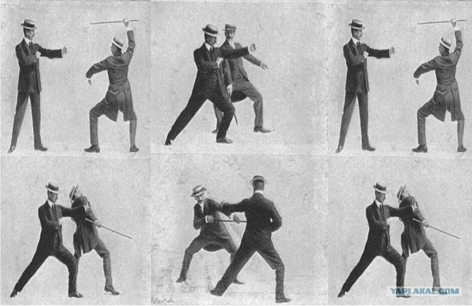

Бартитсу — смешанное боевое искусство и метод самозащиты, первоначально разработанный в Англии в 1898-1902 годах, сочетающий в себе элементы бокса, джиу-джитсу, борьбы с тростями и французский кикбоксинг. В 1903 году он был увековечен (как «бартитсу») сэром Артуром Конан Дойлом, автором рассказов тайны Шерлока Холмса.

История возникновения бартитсу.
В 1898 году британский инженер Эдвард Уильям Бартон-Райт, который провел последние три года в Японии, вернулся в Англию и объявил о создании «нового искусства самообороны». Это искусство, как он утверждал, объединило лучшие элементы целого ряда боевых стилей в единое целое, которое он назвал Бартицу. Бартон-Райт ранее также изучал «бокс, борьба, фехтование, сават и использование стилета под признанными мастерами», по сообщениям, проверяя свои навыки «привлечением крейсеров (уличных бойцов), пока (он) не был удовлетворен в своем заявлении». Он определил Бартицу как «самозащиту во всех ее формах». Как описано в серии статей Бартона-Райт, выпущенных для журнала Pearson’s Magazine между 1899 и 1901 годами, Бартицу в значительной степени был привлечен из Шинден Фудо-Рю-дзюдзюцу, Тераджимы Куничиро и от Кодокана дзюдо. Как стало установлено в Лондоне, искусство расширилось, чтобы включить боевые приемы из других стилей дзюдзюцу, а также из британского бокса, швейцарского швингена, французского кикбоксинга и защитного стиля ладони, разработанного швейцарцем Пьером Виньи. Бартицу также включил в себя комплексную систему обучения физической культуре.
Система самозащиты.
Неясно, было ли когда-либо составлено Бартоном-Райтом формальное описание бартитсу как системы самозащиты. Членам клуба Бартитсу рекомендовалось изучать все 4 основных метода боя без оружия(Canne de combat, сават, бокс, джиу-джитсу), каждому их которых сопоставлялась определённая дистанция боя. Задачей тренирующихся было отточить технику таким образом, чтобы она была при необходимости применима и против другой дистанции(пример: сават против джиу-джитсу)